- Determine the concentration of Cyanobacteria cells required in the LIT bulb
- Determine the concentration of E.coli cells required in the LIT bulb
- Determine the optimal dimensions (diameter) for the LIT bulb
- Determine the optimum incoming light intensity to maximize the production of glucose from the Cyanobacteria cells
- Determine if the optimized conditions can power the co-culture in the LIT bulb
‘OptoFlux: Making design a breeze’
A mathematical model that optimizes object dimensions to maximize their productivity
The aim of Optoflux
We pride ourselves in designing a sustainable bioluminescent light bulb that uses co-culturing to provide the necessary nutrients for the bacteria. Key to this process is the photosynthesis carried out by the cyanobacteria, which provides the necessary glucose for E. Coli.
The aim of Optoflux was to optimise:
- Maximum amount of glucose that Cyanobacteria can produce
- Number of E.coli cells required to produce luminescence that can compete with a conventional 160W light bulb
- Amount of glucose produced from Cyanobacteria that is sufficient to sustain the required number of E.coli cells
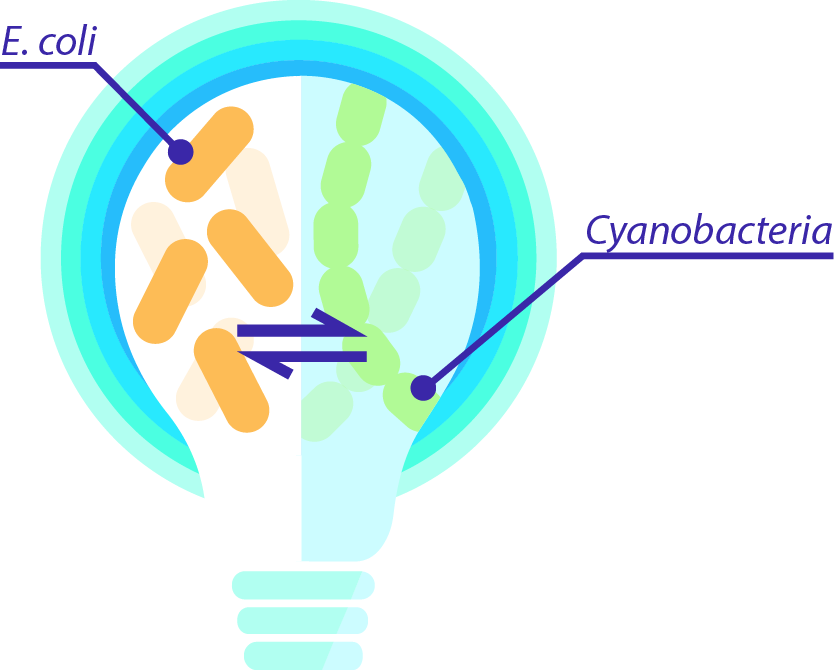
Figure 1Schematic of the co-culture in the LIT bulb
Click here to learn more about the science behind the LIT bulb!
Specific Model Aims
Part 1 - Breakdown of the steps involved in the OptoFlux model
- Incoming Photon Flux Density (Iph) at the edge of the LIT bulb that is closest to the light source
- Iph at each position in the LIT bulb
- Rate of photon uptake by the Cyanobacteria cells at each position in the LIT bulb
- Average sugar production rate at each position in the LIT bulb
Modelling steps
1) Incoming Photon Flux Density (Iph) at the edge of the LIT bulb that is closest to the light source
We determined the number of photons entering our LIT bulb by employing the Planck-Einstein relationship . This relationship enabled us to use radiometric units to quantify the number of photons entering our LIT bulb.
We only focused on quantifying the photons within the Phostosynthetically Active Radiation (PAR) part of the light spectrum, as those are the only light wavelengths used for photosynthesis. Through quantifying the number of photons entering our LIT bulb we could determine the levels of photosynthesis that could take place by our Cyanobacteria cells.
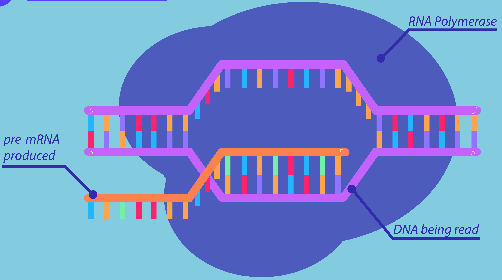
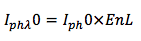
Where,
Iphλ = Incoming photon flux density at a particular wavelength (λ)
Iph = Total Incoming photon flux density over the PAR light spectrum
Enl = Amount of light absorbed by the Cyanobacteria cells at different Iph values
2) Iph at each position in the LIT bulb
We then decided to divide the LIT bulb into a number of imaginary segments (z), and to determine the Iph entering each of the imaginary segments of the LIT bulb. This way, we could evaluate the number of photons available for the photosynthesis of our Cyanobacteria cells at each position within the bulb.
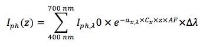
Where,
αx,λ = Specific light absorption coefficient for Cyanobacteria cells
Cx = Concentration of Cyanobacteria biomass in the LIT bulb
z = Zone, i.e. Location in the LIT bulb
AF = Accumulation Factor (accounts for the photoaccumulation state of the cells)
Δλ = Wavelength intervals
3) Rate of photon uptake by the Cyanobacteria cells at each position in the LIT bulb
We determined the photon uptake rate at each position in the LIT bulb using forward and backward finite differences. The finite differences allowed us to estimate an approximation.
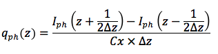
Where,
Δz = Distance between two positions in the LIT bulb
qph(z) = Rate of photon uptake by the Cyanobacteria cells at each position in the LIT bulb
4) Average sugar production rate at each position in the LIT bulb
We determined the average rate of sugar production within the LIT bulb by determining the specific rate of sugar production and the yield of biomass on sugar at each position in the bulb.
1. Finding the specific rate of sugar production at each position of the LIT bulb
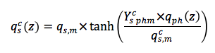Where,
qsc(z)= Specific sugar production rate at each position in the LIT bulb
qs,mc(z) = Maximal sugar production rate in the cells
Yphmc = Maximal yield of sugar on photons
2. Determine the yield of biomass on sugar production at each position of the LIT bulb
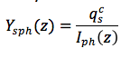Where,
Ysph(z)= Yield of biomass on sugar at every position in the LIT bulb
Finally, we determined the average sugar production rate in the LIT bulb:
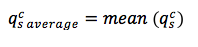Where,
qs averagec= Average sugar production rate
OptoFlux Results
With our OptoFlux model, we determined the optimal:
1. LIT bulb dimensions
2. Cyanobacteria cell concentration
3. Incoming Photon Flux Density.
Optimising the diameter of the LIT bulb
When optimizing the diameter for the LIT bulb we decided to focus on two aspects, the amount of sugar produced and the yield of sugar on biomass for each diameter tested.
| Parameter | Inputted values |
|---|---|
| Concentration of Cyanobacteria cells in the LIT bulb (mol/m3) | 1 |
| Incoming Photon Flux Density (mol/m2s-1) | 5E-03 |
Figure 1: Outlines the parameters inputted into OptoFlux model to optimize the diameter of the bulb
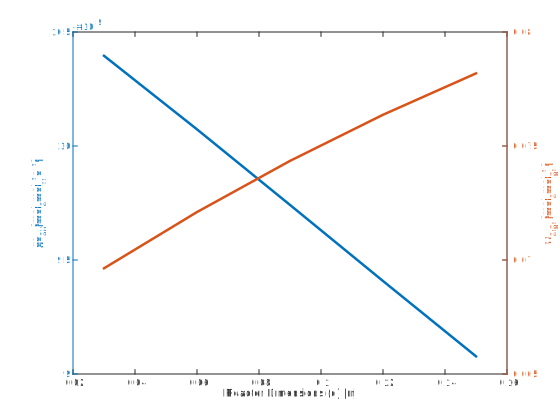
Figure 2: Demonstrates the effect increasing the diameter of the bulb has on the average sugar production rate and the yield of biomass on sugar
As expected, Figure 1 shows the general trend of increase in LIT bulb diameter with a decrease in average sugar production rate. Increasing the diameter of the bulb, increases the area available for the Cyanobacteria cells, which again increases the probability of shading effects associated with the distribution of the cells along the diameter of the bulb. The higher the shading effect, the lower the amount of light that can reach all the cells in the cell culture. The point of intersection of the 2 lines represents the trade off of the 2 optimized conditions.
| Parameters | Optimized values |
|---|---|
| Average sugar production rate (qs average) (molsmolx-1s-1) | 9.8E-05 |
| Yield of biomass on sugar (Ys/ph) (molsmolph-1) | 1E-01 |
| LIT lighbulb Diameter (m) | 9.8E-02 |
Figure 3: Outlines the optimized diameter for the LIT bulb
Optimising the concentration of the Cyanobacteria cells in the LIT bulb
Similarly, to optimize the concentration of Cyanobacteria cells needed for the LIT bulb we focused on two aspects: the amount of sugar produced; and the yield of sugar on biomass for each diameter tested.
| Parameter | Inputted values |
|---|---|
| Diameter of the bulb | 9.8E-02 |
| Incoming Photon Flux Density (mol/m2s-1) | 5E-03 |
Figure 4: Outlines the parameters that were inputted into OptoFlux model to optimize the Cyanobacteria concentration in the bulb
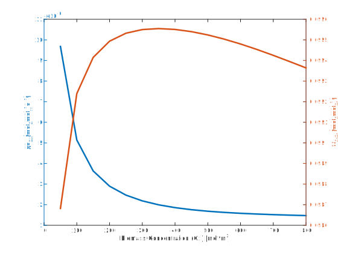
Figure 5: Demonstrates the effect changing the Cyanobacteria concentration has on the average sugar production rate and the yield of biomass on sugar
Figure 5 demonstrates that increasing the concentration of Cyanobacteria in the LIT bulb, decreases the average rate of sugar production. An augmentation in the concentration of cells in the bulb, leads to an increase in the overall number of cells. This causes the content of the LIT bulb to be more viscous. Therefore, it becomes harder for light to penetrate the cell culture and reach cells that are found further inside the bulb. As such, the average sugar production rate in the LIT bulb decreases. The yield of biomass on sugar increases as the concentration of Cyanobacteria cells increases. This occurs because, if the number of cells in the bulb increases there are a larger number of cells photosynthesising. This in turn results in a larger amount of sugar being produced. Here again the intersection of the two lines represents the optimized conditions, i.e. the trade off between average sugar concentration and yield of biomass on sugar.
| Parameters | Optimized values |
|---|---|
| Average sugar production rate (qs average) (molsmolx-1s-1) | 6.2E-06 |
| Yield of biomass on sugar (Ys/ph) (molsmolph-1) | 9.7E-02 |
| Concentration of Cyanobacteria cells (mol m3) | 100 |
Figure 6: Outlines the optimized Cyanobacteria concentration for the LIT bulb
Optimizing the Incoming Photon FLux density (Iph) for the LIT bulb
To optimize the incoming Iph for the LIT bulb we focused on two aspects: the amount of sugar produced; and the yield of sugar on biomass.
| Parameter | Inputted values |
|---|---|
| Diameter of the bulb (m) | 9.8E-02 |
| Concentration of Cyanobacteria cells (mol/m3) | 100 |
Figure 6: Outlines the parameters that were inputted into OptoFlux model to optimize the Iph for the LIT bulb

Figure 7: Demonstrates the effect increasing the Iph has on the average sugar production rate and the yield of biomass on sugar
From Figure 7 we see that an increase in the Iph for the LIT bulb correlates with an increase in the average sugar production rate. This occurs because by increasing the Iph for the bulb, essentially corresponds to an increase in the number of photons entering the bulb. Therefore, a larger number of photons is available for photosynthesis. This photon increase helps overcome any shading effects present in the LIT bulb and allows for more cells to photosynthesise. However, as the Iph increases the yield of biomass per photon decreases. This occurs because once the saturation point for photosynthesis is met, the maximum rate for photosynthseis is met, and the remaining photons will not be utilised by the cells for photosynthesis. The best Iph was identified as the point at which the graphs intersect. Although past the point of intersection the average sugar production rate increases there is such a significant decrease in the yield of sugar per photon the best trade-off between the two variables is identified as the point of intersection.
| Parameters | Optimized values |
|---|---|
| Average sugar production rate (qs average) (molsmolx-1s-1) | 1.3E-05 |
| Yield of biomass on sugar (Ys/ph) (molsmolph-1) | 9.5E-02 |
| Incoming Photon Flux Density (mol/m2s-1) | 2.5E-03 |
Figure 8: Outlines the optimized Iph for the LIT bulb
OptoFluxes optimiszd conditions for the LIT bulb
From the OptoFlux model we were able to optimize the conditions within our LIT bulb to maximize the amount of sugar produced from our Cyanobacteria cells.
| Parameters | Optimized values |
|---|---|
| Diameter of bulb (m) | 9.8E-02 |
| Concentration of Cyanobacteria cells (mol/m3) | 100 |
| Incoming Photon Flux Density (mol/m2s-1) | 2.5E-03 |
Part 2: Analytically optimising the concentration of E.coli cells in the LIT bulb
We optimized the concentration of E.coli cells in our LIT bulb in order to be able to produce
a luminescence equivalent to a 160W light bulb.
1.) Determine the number of E.coli cells required to produce the required luminescence
2.) Determine the number of Cyanobacteria cells required to produce sufficient levels of glucose
to co-culture the desired number of E.coli cells
3.) Determine the concentration of Cyanobactria cells required in the bulb and compared it to the
maximum concentration of Cyanobacteria cells our OptoFlux optimized LIT design can handle
From literature we determined that each E.coli cell produces a luminescence equivalent to 104 photons/s. A 160 W light bulb produces a luminescence of 1018 photons/s. Therefore:
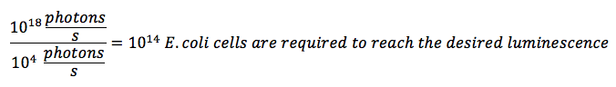The ratio of E.coli cells to Cyanobacteria cells in a co-culture is:
107 E.coli cells to 108 Cyanobacteria cells. Therefore:
In order to determine the Cyanobacteria cells concentration in the LIT bulb we first calculated the mass of the Cyanobacteria cells and then determined the moles of the Cyanobacteria cells. This enabled us to determine the concentration of Cyanobacteria cells present in the LIT bulb.
Interested in the breakdown of steps? Click away
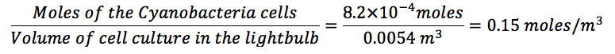The OptoFlux LIT bulb design has the capacity to culture up to 100 mol/m3 of Cyanobacteria cells. In order for our LIT bulb to produce a luminescence equivalent to a 160W light bulb we require a Cyanobacteria concentration of 0.15 mol/m3, this concentration is 100 fold lower than the maximum Cyanobacteria concentration that can be handelled in the OptoFlux LIT bulb design. Therefore, our OptoFlux LIT bulb is suitable for to maintain our co-culture.
We decided to create a prototype of the OptoFlux LIT bulb.
OptoFlux Assumptions
- Light will only hit the bulb from one side
- The diameter inputted into the OptoFlux model represents the longest distance light would need travel through the bulb
- E.coli cells and Cyanobacteria cells are homogeneously distributed within the LIT bulb
- As blue light activates the luminescence of the E.coli cells, the absorption coefficients for Cyanobacteria were taken at 450nm (13 m2mol-1) light wavelength
- The effects of light scattering, including reflection and refraction, are neglected
- All cells in the cell culture are in their exponential growth phase
OptoFlux Species
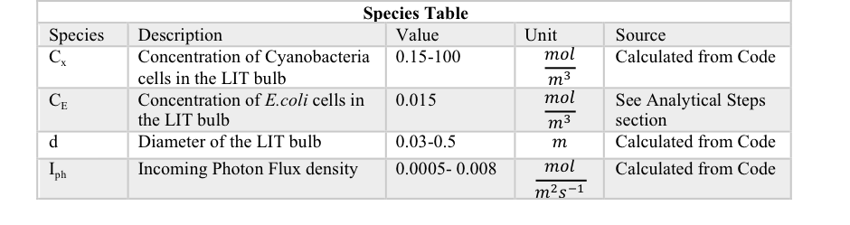
OptoFlux Parameters
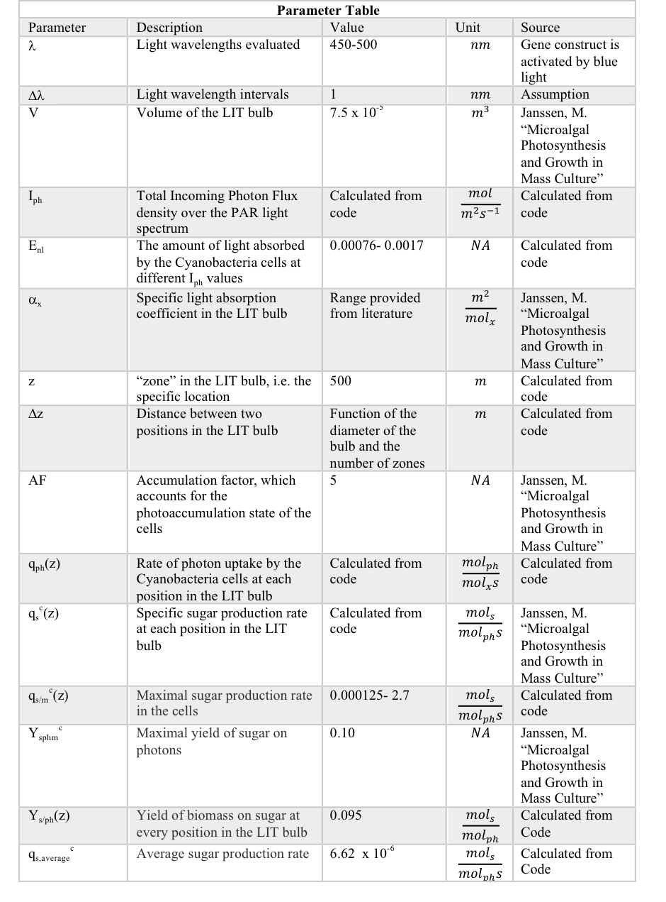
Analytical steps used to calculate the concentration of Cyanobacteria
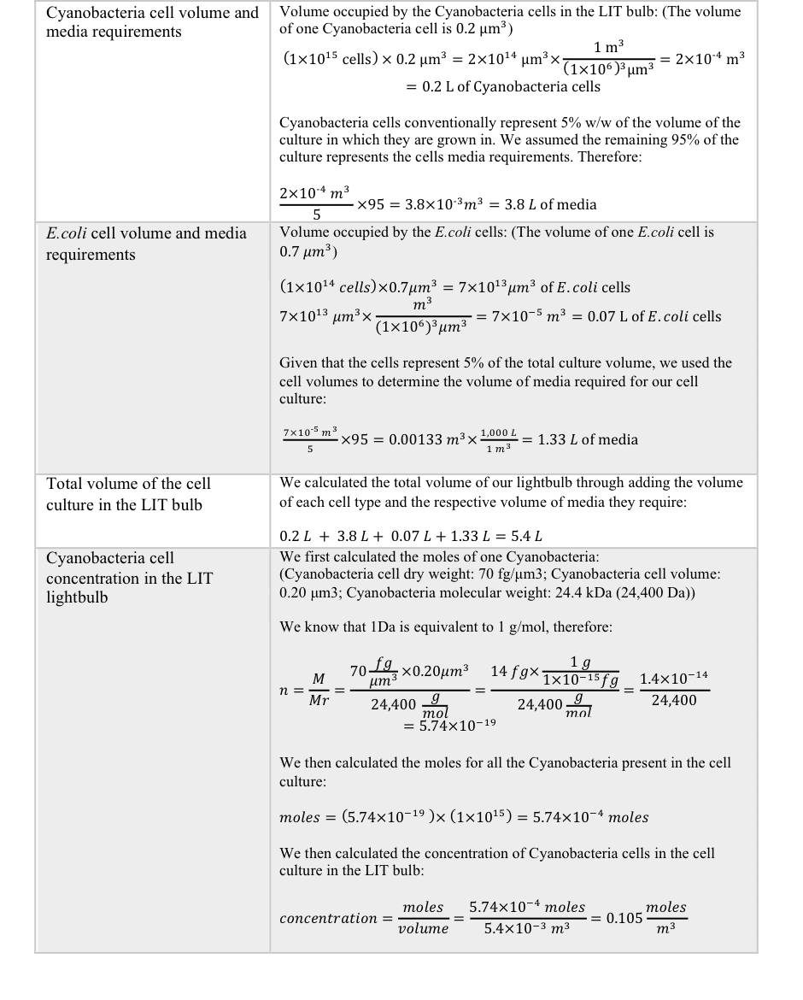
Bibliography
Ducat D, Avelar-Rivas J, Way J, Silver P. Rerouting Carbon Flux To Enhance Photosynthetic Productivity. Applied and Environmental Microbiology. 2012;78(8):2660-2668.
Janssen M. Microalgal Photosynthesis and Growth in Mass Culture. Photobioreaction Engineering. 2016;:185-256.
Mahlmann D, Jahnke J, Loosen P. Rapid determination of the dry weight of single, living cyanobacterial cells using the Mach-Zehnder double-beam interference microscope. European Journal of Phycology. 2008;43(4):355-364.
Marr A. Growth Rate of Escherichia coli. Microbiological Reviews- American Society for Microbiology [Internet]. 1991 [cited 7 October 2017];55(2):316-333. Available from: https://www.ncbi.nlm.nih.gov/pmc/articles/PMC372817/pdf/microrev00033-0134.pdf
Patel A, Mishra S, Pawar R, Ghosh P. Purification and characterization of C-Phycocyanin from cyanobacterial species of marine and freshwater habitat. Protein Expression and Purification. 2005;40(2):248-255.